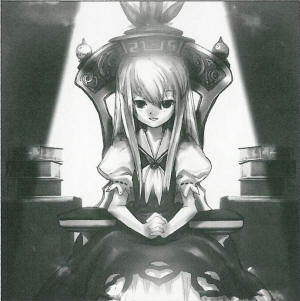
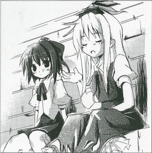

The Mysterious Truth about the Secret History Association
In the Human Village, there are rumors of the existence of a secret society.
The society's purported aims are to find the tracks of the human and youkai that reside in Gensokyo, and discover the secrets of Gensokyo.
Since they also investigate the youkai's areas of activity, it was said that deaths also occurred in extreme cases during the investigations.
This time we have contacted the person who claims to be the leader of said secret society.
Mr. A (pseudonym) of the secret society explains the origins of the society as thus:
People nowadays know nothing about things like why do youkai live here, what is Gensokyo, what kind of people were their ancestors, and so on.
When the omniscient youkai are chased from Gensokyo and Gensokyo falls under human control, it is absolutely necessary that they know the truths about Gensokyo, said he.
Despite this extremely self-centered and human-like behavior, many youkai, including myself, are remaining as spectators rather than taking the group as an enemy.
Some youkai are also offering their frank advice on the matter.
I listened to the thoughts of one such youkai, Miss Keine Kamishirasawa (were-hakutaku).
It's not good that some humans have forgotten their fear of youkai and are trying to drive them out of Gensokyo.
Gensokyo is keeping a balance now between youkai and humans.
Just like (the half-human, half-beast) me.
If that give-and-take balance is destroyed, Gensokyo will collapse in an instant.
Even if many people now think of youkai as they once were, these memories can fade in 20 years when the next generation comes about.
The youkai are not fighting back.
The humans have arbitrarily decided to get away from the youkai.
Humans should not be searching for history now, instead they should be passing history down as if they're happening now, that's the more important thing.
Ms. Keine is half-youkai but is endeared by the humans. She sometimes helps in their daily lives.
If dangerous ideas are formed from this society because the humans have not passed on their history to their descendants, she said she has considered opening a history school.
Aya 
So has the history school opened in the village?
Keine
Yes it has. But it didn't manage to attract many people. Everyone dislikes schools, it seems.
Aya
That's surprising. If we knew something that interesting is starting, we'll be the first to go see it.
Keine
Humans barely get by in their everyday lives. They can't think like you easy-going youkai. If they don't work for their food, they starve to death.
Aya
Why don't you trying opening a school not just for humans but one that is mixed with youkai? That way it's bound to attract everyone.
Keine
That would, wouldn't it. But I don't think I can teach normally if I attracted them like that....I don't actually want to attract, I want to teach humans. Attracting and teaching youkai defeat that purpose, don't they?
Aya
Yeah, that's true. Another suggestion then, why don't you bring sake along? Humans love sake too.
Keine
That wouldn't work as a class. In the end, the humans who want to know history only want to make a world for their own. Maybe normal human beings don't have any interest in history. That's too bad.
Aya
There's one group near the shrine that is beginning to change. There's a feeling of Me First.
Keine
I can't do anything about those humans. Already there isn't much of a difference between them and youkai.
Aya
If it's just by ability, a normal youkai is no match for them.
Keine
That reminds me, there have been these strangers at the shrine. You can't get near to the shrine due to the youkai there, the humans in the village don't find it necessary to travel any distances from the shrine...
Aya
Is that so....? In that case, humans wouldn't usually visit and pray at the shrine?
Keine
It's no wonder that the miko is always complaining about not receiving donations at all. She brought it upon herself. If she was serious about it she would have gone to the village and advertise her work. Even if that miko works, the humans usually don't get to hear about it. I heard that she also befriended youkai. There are even people who said the shrine was overtaken by youkai.
Aya
It seems that the miko's stance is leading to some misunderstanding among the humans. That miko does seem uncooperative towards humans; you're more inclined towards humans than she is.
Keine
Since I've taken the place of the miko, Gensokyo's balance is maintained. Do you actually record such human matters, being a youkai yourself?
Aya
All of my newspaper's content and readership come from youkai. Well, it's not like there isn't anything about monster-like humans, but basically this article was meant to be about you. If you weren't there, I couldn't have made the article. For us, humans are just targets for attacking, you know?
Profile:
Keine Kamishirasawa
Transforms from a human into a hakutaku on the night of the full moon (Were-hakutaku)
When in human form, has the ability to consume history; when in hakutaku form, holds all of Gensokyo's knowledge and has the ability to create history.
Appearances:
Imperishable Night